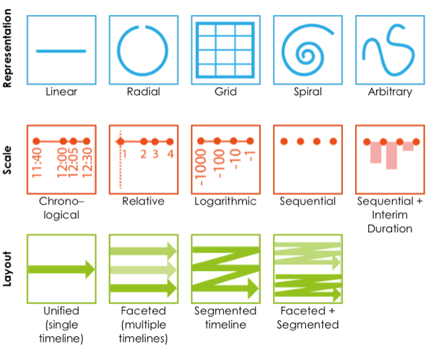
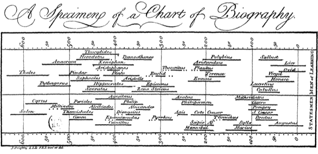
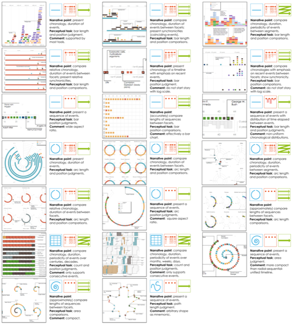
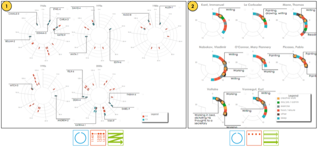
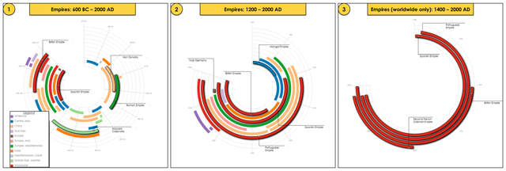
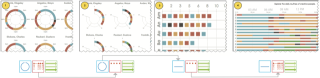

Figure: Chronological and sequential timelines depicting the daily routines of famous creative people, coloured by activity and faceted by person (data from Podio).
Abstract
There are many ways to visualize event sequences as timelines. In a storytelling context where the intent is to convey multiple narrative points, a richer set of timeline designs may be more appropriate than the narrow range that has been used for exploratory data analysis by the research community. Informed by a survey of 263 timelines, we present a design space for storytelling with timelines that balances expressiveness and effectiveness, identifying 14 design choices characterized by three dimensions: representation, scale, and layout. Twenty combinations of these choices are viable timeline designs that can be matched to different narrative points, while smooth animated transitions between narrative points allow for the presentation of a cohesive story, an important aspect of both interactive storytelling and data videos. We further validate this design space by realizing the full set of viable timeline designs and transitions in a proof-of-concept sandbox implementation that we used to produce seven example timeline stories. Ultimately, this work is intended to inform and inspire the design of future tools for storytelling with timelines.
Keywords: Timelines, storytelling, narrative visualization, design space, animated transitions.
Journal Paper
"Timelines Revisited: A Design Space and Considerations for Expressive Storytelling"
By Matthew Brehmer, Bongshin Lee, Benjamin Bach, Nathalie Henry Riche, and Tamara Munzner
To appear in an upcoming issue of IEEE Transactions on Visualization and Computer Graphics. DOI: 10.1109/TVCG.2016.2614803 Access via IEEE Xplore.
Figures
Click on the images below to view high-resolution versions of figures from the paper:

Figure 1: The three dimensions of our design space for expressive story- telling with timelines: representation, scale, and layout.

Figure 2: The linear, chronological form of Joseph Priestley's Chart of Biography (1765) dominates the design of contemporary timelines.

Figure 3: Detail thumbnails of the 20 viable timeline designs generated within our sandbox environment, ordered left-to-right, top-to-bottom by representation, scale, and layout. In each timeline, individual events are encoded with rectangle or arc marks; their fill colours correspond with dataset-dependent event categories. The narrative point, perceptual task, and comments for each timeline design are also provided. Larger, high-resolution images of these timelines are available on our supplemental website along with descriptions of the visualized datasets and event categories.

Figure 4: Two viable timeline designs that we did not encounter in our survey. 1: A segmented radial chronological timeline of Category 4 and 5 hurricanes between 1960 and 2010, affording comparisons of hurricane severity and periodicity between decades. 2: Faceted radial sequential timelines depicting the daily routines of famous creative people, affording comparisons of the number and variation of events between people.

Figure 5: A radial chronological timeline depicting the durations of history’s great empires, colored by world region. An example of disclosing all or selected parts of a timeline via transitions: (1) all empires since 600 BC; (2) all empires since 1200 AD; (3) only empires with worldwide reach.

Figure 6: This sequence represents scenes from our timeline story depicting the daily routines of famous creative people realized in our sandbox as an example story (video below). The initial narrative point (1) emphasizes the cyclical nature of a daily routine and compares the chronology and duration of events between the radial facets, where each facet corresponds to a famous creative person. This point is followed by a scale transition from chronological to sequential (2) and a representation transition from radial to linear (3). This narrative point involves a comparison of the length and heterogeneity of event sequences between the facets. Since these narrative points differ on more than one dimension of our design space, an intermediate scale transition (2) is required prior to the representation transition (3). Finally, another scale transition from sequential back to chronological (4), where the narrative point once again involves a comparison of chronology and duration of events between the facets, however the linear representation additionally affords the presentation of synchronicities (coinciding events) across the facets.
Video: The Daily Routines of Famous Creative People (3m44s).